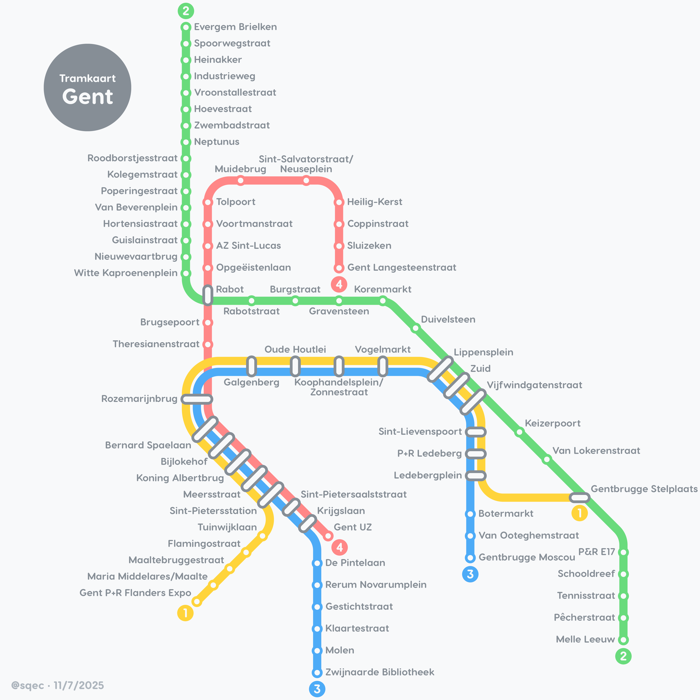

Bratislava, Slovakia
7/7/2025
Tramvajová mapa Bratislava
Tram
Budapest, Hungary
8/7/2025
Budapest metró térkép
Metro
Sofia, Bulgaria
10/07/2025
Karta na metroto v Sofiya
Metro

Ghent, Belgium
11/07/2025
Tramkaart Gent
Tram

Denver, USA
12/07/2025
Denver Light Rail Map
Tram+Commuter
Manila, Philippines
13/07/2025
Mapa ng mga tren ng Kamaynilaan
Metro

Oslo, Norway
14/07/2025
Oslo T-banekart
Metro

Newcastle-upon-Tyne, UK
15/07/2025
Tyne & Wear Metro Map
Metro
Manchester, UK
16/07/2025
Manchester Metrolink Map
Tram

Washington DC, USA
17/07/2025
Washington Metro Map
Metro

Warsaw, Poland
18/07/2025
Mapa metra w Warszawie
Metro
Copenhagen, Denmark
19/07/2025
Kort over Københavns Metro
Metro

Serfaus, Austria
20/07/2025
U-Bahn-Karte Serfaus
Metro
Haifa, Israel
21/07/2025
Karmelit Haifa Mapa
Metro
Dnipro, Ukraine
22/07/2025
Karta metropolitenu Dnipra
Metro
Canberra, Australia
22/07/2025
Canberra Light Rail Map
Tram

Omsk, Russia
23/07/2025
Karta metro Omska
Metro

Tbilisi, Georgia
28/08/2025
Tbilisis metros ruka
Metro

Novosibirsk, Russia
29/08/2025
Karta metro Novosibirska
Metro